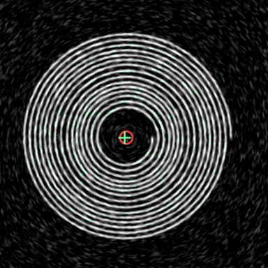
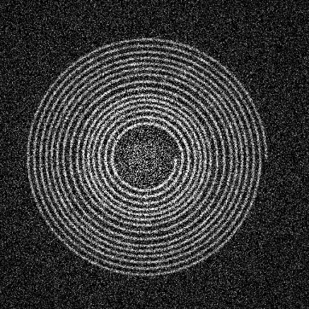
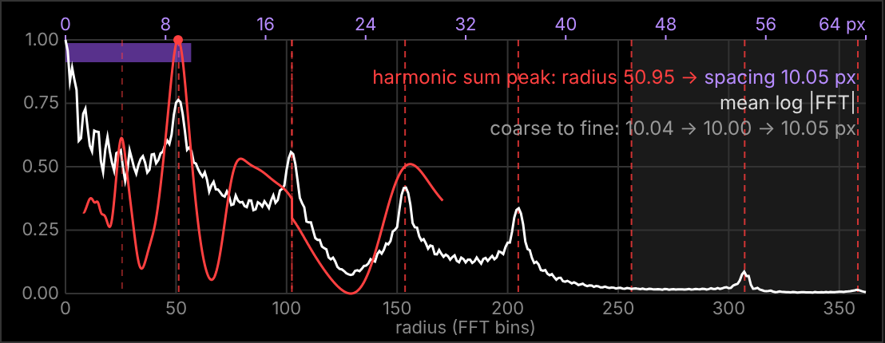
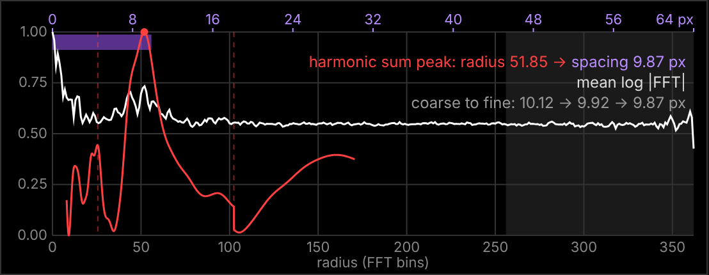
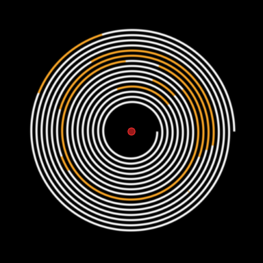
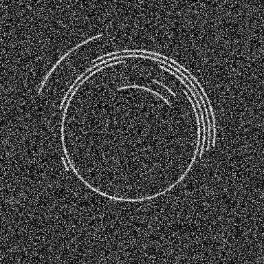
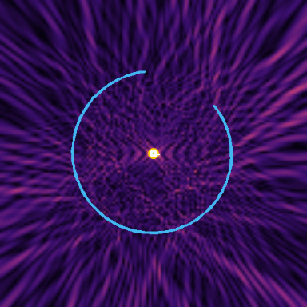
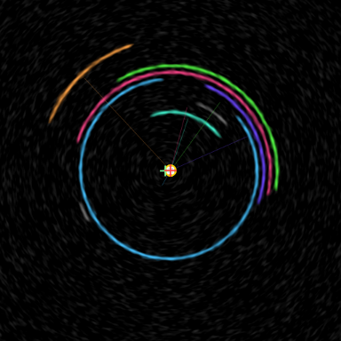
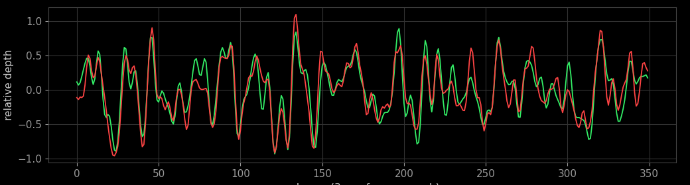

The methods behind the three experiment pages, step by step: every step, its parameters, what was tried, and how well it works. For what each control on the spacing page does, see Explain controls. Source: github.com/adamfinkelstein/spiral.
| Input | Meaning |
|---|---|
| Image | 512×512 grey image, bright spiral on dark. The center can be anywhere (sub-pixel) and is not given. |
| Nominal spacing s0 | The device's target ring spacing. The true spacing is assumed to be within ×0.5–2 of it. (In the app the true spacing stands in for it.) |
| Expected variation v | How much the local spacing may vary along the spiral (device tolerance), default ±10%. |
| Spiral sense | Which way the spiral winds, needed for the sideways-offset correction in step 1. |
The model is an Archimedean spiral r = bθ with b = spacing / 2π (the radius grows by one spacing per turn). b appears throughout: it is also the sideways offset that makes a spiral differ from circles (step 1).
The app renders the spiral per pixel (not with canvas strokes), from the distance to the nearest arm, with smooth Gaussian (erf) edges: sharp edges contain frequencies the 512 grid can't represent, which alias into false arcs in the Fourier transform; a 2–3 px edge transition removes them. To test robustness it can also add:
The spacing itself doesn't need the center (the Fourier magnitude ignores where the spiral is), but step 2 weights turns by their radius, so it needs the center to within a pixel or so. A centroid of bright pixels would be biased whenever some angles are brighter or missing. Instead, every pixel on a ring's edge has a gradient pointing across the ring, so the line through it along the gradient passes (nearly) through the center; the center is where most lines meet.

| Case (off-center spirals) | No tangential blur | Tangential blur 3 px |
|---|---|---|
| No noise (spacing 10 / 20) | 0.03–0.08 px | 0.04–0.06 px |
| Noise 0.3 | 3–8 px | 0.5–0.8 px |
| Noise 0.6 | 6–8 px | ~2.2 px |
| Noise 1.0 | 18–36 px | 2.3–3.8 px |
Medians over 3 positions. The sideways correction matters most with few turns: at spacing 20 it took the clean error from 0.27 to 0.03 px. A non-circular drawing (aspect 1.02) is the hardest case (~2 px), since its lines no longer meet at one point. RANSAC alone was about as accurate as the Hough-style vote it replaced; the tangential blur did most of the work under noise. Cost: ~60 ms blur + ~40 ms lines + ~12 ms RANSAC per later round.
In the Fourier transform each turn contributes in proportion to its length, which grows with r, so outer turns dominate. The magnitude spectrum can't tell inner from outer turns (that information is in the phase), so the weighting has to happen in the image, before the transform, about the center from step 1. Multiply each pixel by
w(r) = max(r, 2s0)−½, normalized to mean 1
The cap near the center avoids amplifying noise where there are no rings.

| Spacing, offsets (advanced search, 10%) | by length (none) | 1/√r | 1/r (equal turns) |
|---|---|---|---|
| 10, ±0.1 | 0.37 / 0.9 | 0.75 / 1.3 | 0.87 / 1.8 |
| 10, ±0.25 | 0.80 / 1.4 | 0.48 / 1.8 | 1.20 / 2.4 |
| 10, ±0.5 | 2.5 / 14.6 | 2.4 / 8.2 | 3.5 / 9.6 |
| 20, ±0.1 | 0.42 / 0.9 | 0.63 / 1.4 | 1.57 / 2.3 |
| 20, ±0.25 | 2.5 / 11.6 | 2.4 / 4.0 | 1.8 / 8.0 |
| 20, ±0.25, noise 0.3 | 2.6 / 10.9 | 2.2 / 3.7 | 1.0 / 5.5 |
Median / max % error over 10 random offset sets. 1/r over-weights the short inner turns (fewer pixels, broader and noisier peaks); 1/√r keeps the medians close to unweighted and cuts the worst cases about 3×. Results with the estimated center were identical to those with the true center.
A point at radius ρ in the transform is a pattern repeating ρ times across the 512 px image, so rings spaced s px apart put their main peak at ρ1 = 512 / s, and, because each line is a narrow band rather than a smooth wave, fainter harmonics at kρ1 (51.2, 102.4, 153.6, … for spacing 10).



For each candidate first-peak radius ρ, measure how far the profile at each multiple stands above the points halfway to its neighbours:
S(ρ) = (1/√K) ∑k=1..K [ P̃(kρ) − ½P̃((k−½)ρ) − ½P̃((k+½)ρ) ]
This single sharp stage (the app with "Advanced peak search" off) gets a perfect spiral within ~0.06% (0.2–0.5% over many shapes), but fails badly once the local spacing varies: rings at several spacings smear each harmonic into a band, and the score jumps to a wrong peak (errors ~70%).

| Spiral, offsets (local variation) | Single sharp stage | Advanced, 10% |
|---|---|---|
| Spacing 10, none | 0.06 / 0.1 | 0.45 / 0.5 |
| Spacing 10, ±0.25 (≈±17%) | 1.5 / 5.2 | 0.75 / 1.6 |
| Spacing 10, ±0.5 (≈±33%) | 13 / 43 | 2.0 / 14 |
| Spacing 20, ±0.1 (≈±13%) | 2.1 / 70 | 0.55 / 1.1 |
| Spacing 20, ±0.25 (≈±33%) | 70 / 71 | 2.5 / 12 |
| Spacing 20, ±0.5 (≈±67%) | 70 / 70 | 16 / 50 |
Median / max % error over 10 random offset sets, without turn weighting.
| Step | Parameter | Default | Explored / notes |
|---|---|---|---|
| 1 | Pre-blur | σ 1 px | σ ≈ 2 helped under noise before the tangential blur existed |
| 1 | Orientation bins | 64 over 180° | |
| 1 | Lines per orientation | 150 | fixed top 5–50% of all pixels tried first |
| 1 | Strength floor | 70th percentile | |
| 1 | RANSAC | 600 × 1500, then 150 × 1000; ε = 2 px; partner ∝ sin² | uniform pairs with a 30° cutoff tried first; 600 × 3000 in every round made RANSAC 18× slower |
| 1 | Tangential blur | σ 3 px | 0 (off), 2, 3, 5 |
| 1 | Rounds / stop | ≤ 3, < 1 px | 5 rounds and 0.05 px: no better under noise, the estimate jitters ~1 px |
| 2 | Turn weighting | 1/√r, capped at 2s0 | none, 1/√r, 1/r |
| 3 | Mean subtraction, Hann window | on | |
| 3 | Profile smoothing | 1.5 bins | 0, 1.5, 3 |
| 4 | Candidate step | 0.05 bins | + parabolic refinement |
| 5 | Search range | ×0.5–2 of s0 | none, ×0.8–1.25, ×0.9–1.1 |
| 5 | Expected variation | 10% | 0, 5, 10, 15%; starting v 0.1–0.4 |
| Condition (full pipeline) | Spacing error, median / max |
|---|---|
| Perfect spiral, any noise up to 1.5 (radius 50–200 or 30–100, spacing 10 or 20) | 0.1–0.7% / ≤ 2% |
| Local spacing varying up to ≈±15% | 0.5–0.8% / ≤ 1.8% |
| Local spacing varying ≈±30% | 2.2–2.4% / 3.7–8% |
| Local spacing varying ≈±67% | ~16% / 35% (unreliable) |
Given the spacing from steps 3–5, the page computes the card pipeline's
coherence map (Part 3, P3.2), ported to JS
(coherence.js; "Coherence center", on by default). With b = S/2π,
Z(c) = ∑p v(p) e−i(|p − c|/b − angle(p − c)) (no minus sign here:
the arms are bright, not grooves) is a correlation with a spiral-wave kernel,
computed by three 512² FFTs (image, kernel, inverse; circular, kernel reach
255 px, image mean subtracted).
Center: point symmetry of the map, not its peak. A fit of a·J0(2π|c − c0|/S) around the map's brightest pixel (the card pipeline's first method) fails as soon as the spiral is slightly stretched (Aspect ≠ 1): the turns no longer add in step at the center, the bright spot splits into lobes, and the fit locks onto the brightest lobe, 5 px off at aspect 0.98 and 20 px at 1.05. The map stays symmetric under a 180° turn about the true center, though (Adam's observation), and the self-convolution finds that symmetry: for g = (|Z| − its window mean) × a Gaussian window (σ = 3 spacings) about the peak, C(s) = ∑p g(p)·g(s − p) is largest at s = 2c0, where every term is g(p)². It runs on a crop about the peak, M×M with M the power of two ≥ 6σ (128² at spacing 5, 256² at 10, the whole 512² map from 20 up); the maximum is searched in half-pixel steps of c within ±M/4 and refined by a parabola. Point symmetry needs no axis: a stretch along any direction keeps it, while left–right and up–down mirror symmetry only hold for a stretch along the image axes. The phase is the angle of Z at that center (bilinear). About 46 ms per frame in all, almost all of it the map (node), so it runs live while dragging. In the zoom, the yellow square is the map's brightest pixel. Sub-pixel precision isn't needed downstream (the card pipeline's full-res refit searches ±1.5 spacings for the center and fits it), so the J0 fit was dropped.
| Center error, median / max over 6 random centers and phases (radius 50–200, true spacing) | J0 fit at the peak | Symmetry center |
|---|---|---|
| Aspect 1, spacing 10, no noise | 0.001 / 0.00 px | 0.013 / 0.02 px |
| Aspect 1, noise 0.5 | 0.016 / 0.02 | 0.017 / 0.03 |
| Aspect 0.98 (no noise / noise 0.5) | 5.3 / 5.3, 5.2 / 5.2 | 0.03 / 0.04, 0.04 / 0.05 |
| Aspect 1.03 | 10.3 / 10.3 | 0.06 / 0.08 |
| Aspect 1.05 (no noise / noise 0.5) | 20.2 / 20.3, 20.2 / 20.3 | 0.09 / 0.10, 0.09 / 0.11 |
| Offsets 0 / −0.5 / 0 / 0.5 | 0.20 / 0.20 | 0.20 / 0.20 |
| Aspect 0.979, offsets 0 / −0.7 / 0 / 0.55 | 10.3 / 10.3 | 0.20 / 0.22 |
| Spacing 20, aspect 0.98 | 0.19 / 0.20 | 0.05 / 0.06 |
With the symmetry center: spacing 5 / 20 (noise 0.5) / 40 give 0.05 / 0.03 / 0.06 px; the phase (arg Z at the center) is within 0.5–1.8° at aspect 1 (a small fixed bias from the arms not being sinusoidal) and 2.3° at aspect 0.98, but meaningless at 1.05 (175° off: no single phase fits a strongly stretched spiral). Radius offsets leave a 0.2 px error for any method: the turns are no longer symmetric about the center. Also tried: refining the symmetry center by a normalized asymmetry score (window centered on each trial center, |Z| or complex Z): at most 0.03 px better, for 26 ms more; not kept.
Sensitivity to the spacing (measured with the J0 fit, aspect 1, noise 0.3, 6 trials each, spacing off by ±ε): the center hardly moves — median 0.01, 0.03, 0.06, 0.08, 0.14 px at ε = 0.5, 1, 2, 3, 5% (spacing 10 and 20 alike), none failed — but the phase shifts by ≈ 360° × (mean radius / S) × ε: 26° per 0.5% at spacing 10 (~14 turns of mean radius), 14° at spacing 20. The FFT's 0.5% spacing error on the default spiral (10.05 vs 10 px) gives a 24° phase error; with "Spacing for Z: true spacing" it is 0.8°. On a card (mean radius ≈ 76 spacings) 1% would shift the phase by ~270°, so the low-res phase is only a start for the full-res refit, which fits the spacing too.
The card pipeline uses the same symmetry center (P3.2), with a wider window for its larger spirals.
| Input | Meaning |
|---|---|
| Chunk image | 512×512; only random pieces of the spiral, plus noise. Center unknown. |
| Spacing | Known: from Part 1, modelled as the true spacing × (1 + Spacing error), error 0 by default. |
| Winding | Known (real cards all wind the same way); needed for the sideways-offset correction. |
The test chunks: Number of chunks (10), each covering a random angle between 0 and Max extent (180°), placed uniformly by arc length. Optional: noise (fixed pattern per chunk set), radius offsets (Part 1), and a spacing error. The center page is spiral-only.


| Noise, tangential blur | Components | Kept fits > 5 px off | Per-chunk median | Start 2 | Combined center |
|---|---|---|---|---|---|
| 0.3, off / 3 px | 68 / 68 | 1 / 2 | 0.21 / 0.21 px | 0.02 / 0.03 px | 0.04 / 0.03 px |
| 0.6, off / 3 px | 75 / 68 | 8 / 3 | 0.51 / 0.36 px | 0.12 / 0.07 px | 0.05 / 0.06 px |
| 1.0, off / 3 / 5 px | 1038 / 127 / 75 | 107 / 18 / 6 | 46 / 1.0 / 0.8 px | 4.5 / 0.35 / 0.16 px | 0.10 / 0.08 / 0.10 px |
8 chunk sets of 10 per noise level. The combined center was already robust (RANSAC rejects junk); the blur fixes the intermediate stages and makes heavy noise much faster. Phase got slightly worse at noise 1.0 (0.95° → 1.3°). Earlier, a plain denoising blur alone took the median error at noise 0.6 from 206 px to 0.9 px.

What limits a single chunk:
Start 2 alone is within ~0.03–0.08 px (max 0.2 px) of the truth when chunks surround the center, even at noise 0.6. Starting every chunk from it cut per-chunk failures (> 5 px) from 16% to 13% at noise 0.6.

| Chunks (30 per set, masked to a wedge), noise | Start 2 | Combined center | Phase: per-chunk median → combined |
|---|---|---|---|
| All around, 0.3 | 0.016 px | 0.018 px | 0.5° → 0.75° |
| All around, 0.6 | 0.04 px | 0.04 px | 1.0° → 0.8° |
| NE + SW quadrants, 0.6 | 0.11 px | 0.02 px | 3.4° → 0.9° |
| NE quadrant, 0.3 | 0.09 px (max 0.9) | 0.06 px (max 0.14) | 3.1° → 1.8° |
| NE quadrant, 0.6 | 0.37 px (max 16) | 0.11 px (max 20) | 3.5° → 2.6° |
Medians over 8 sets, measured before the tangential blur was added. The shared phase is what helps when chunks are on opposite sides. Chunks all on one side remain the hard case: their valleys are nearly parallel, so distance errors add up, and under noise the estimate is pulled toward the chunks (mean 0.4–2.7 px, cause not yet found). Genuine chunks' Δ at the combined fit: 99% ≤ 0.012, so τ = 0.04 rejects almost none.
| Step | Parameter | Default | Explored / notes |
|---|---|---|---|
| P2.1 | Denoise blur | σ 1 px | 0–3 |
| P2.1 | Tangential blur | σ 3 px | 0, 3, 5 |
| P2.2 | Threshold | 0.45 | single 0.3–0.6; hysteresis 0.5/0.3, 0.5/0.4 (no better after the tangential blur) |
| P2.2 | Min component | 20 px | |
| P2.3 | Tukey cutoff | 0.5 × spacing | 0.25, 0.35, 0.5 |
| P2.3 | Keep: min extent / inlier fraction | 30° / 0.65 | random pixels score ~0.5 at this cutoff |
| P2.4 | Shared start | on | off: each chunk from its own circle fit |
| P2.5 | Combine, τ | on, 0.04 | |
| P2.5 | Chunk model | shared spacing & phase | see P2.7 |
With radius offsets, each region sits slightly in or out from the ideal curve, so one shared phase is wrong: the default combination rejected up to half of the genuine chunks. Chunk model on the page:
| Chunks, offsets | Start 2 | Shared | A | B | Agreeing (shared / A / B) |
|---|---|---|---|---|---|
| All around, none | 0.03 | 0.04 | 0.28 | 0.62 | 40 / 40 / 40 of 40 |
| All around, ±0.25 | 0.10 | 0.26 | 0.22 | 0.43 | 25 / 40 / 40 |
| All around, ±0.5 | 0.15 | 0.55 | 0.37 | 0.54 | 20 / 40 / 40 |
| NE quadrant, none | 0.16 | 0.06 | 0.19 | 0.35 | 38 / 38 / 38 of 38 |
| NE quadrant, ±0.25 | 0.25 | 0.46 | 0.20 | 0.35 | 24 / 38 / 38 |
| NE quadrant, ±0.5 | 0.24 | 0.54 | 0.29 | 0.72 | 17 / 38 / 38 |
Median combined center error (px), noise 0.3, tangential blur on, 6 sets. A accepts every genuine chunk and beats the shared model whenever offsets are present. B as implemented is worse everywhere (its local spacings were off by 3–13%): a chunk's own spacing is weakly determined, and the penalty is swamped by hundreds of strongly correlated pixels, so the center wanders. Start 2, the plain median of per-chunk fits (each with its own phase), is the best center whenever offsets are present.
Real cards (e.g. the sonorine scans) differ from these chunks: the whole annulus is present (~40 turns, inner radius ~0.58 of the outer, outer θ ≈ 600 rad), grooves are depressions in a noisy depth map, paper texture is correlated rather than white, and the grooves deviate from a perfect spiral by drift, card warp and the audio itself. Connected components there are an artifact of thresholding. Under consideration:
Built in Python (cardlab/, build_card.py): card.html
is the generated report, with results over many seeds. The method was first developed in the browser
(card_js.html, frozen); the Python version differs in the center search (P3.2), the FFT
window (P3.1) and the grain texture. A stage-by-stage check against the JS (checks/compare_with_js.sh)
found the shared stages agree to rounding.
A height map rendered at full resolution (5551², ~6 s); the low-res image and the full-res strip both come from it. The card is idealized: its surface is flat at height 0 (no warp, bend, dust or scratches), plus fine paper grain (white noise blurred to the measured correlation length). The groove is cut by a round stylus (a parabola) moving along r(θ) = bθ + δ(θ), b = S/2π, one fixed winding; δ = drift (3.2 px rms, periods of 0.3–1 turn, so neighbouring turns are nearly independent; matched to the real card, below). A small lateral wobble along the groove (0.3 px rms, wavelengths 200–3000 px, assumed) was dropped in Nov 2026: it was below the trace error and nothing measured supported it.
How the drift compares with the real card (sonorine_001, measured on Tomaz's images 21 and 26: the centroid of his groove mask across each turn, relative to his fitted spiral, per turn): 2.9 px rms over 30 turns (image 21, 700² px) and 3.5 px rms over ~41 turns (image 26, 1400² px), extremes −7.8 to +4.7 px. Neighbouring turns are uncorrelated (the turn-to-turn difference has sd √2 × the spread), while along one turn the offset changes only ~1.5 px over 1200 px (~0.1 turn). So the model's amplitude is a little low, and its periods too long: the real offsets change by about one turn's worth from one turn to the next. (Measured against a fitted spiral, so fit errors are included, but those would be smooth across turns, not turn to turn.) The model was changed to match (Nov 2026): 3.2 px rms (hard cards 5 px), periods 0.3–1 turn (60 waves), which gives a correlation of ~0 one turn apart and ~1.6 px median change over 0.06 turn; before, it was 2 px rms over 0.7–12 turns. With it, the refitted center is 0.09–0.33 px from the truth (was 0.03–0.18: the per-turn drift leaks into the one-turn wave), the trace 0.54–0.83 px rms (was 0.39–0.63), sound correlation 0.891–0.910 on typical cards (was 0.893–0.924); hard cards got easier (5 px fast drift instead of 6 px slow: trace 0.99–1.69 px, wrong groove ≤ 0.41%).
The sound is cut vertically (hill-and-dale): the stylus moves up and down, so the depth of the cut is D(s) = D0(1 + a(s)), a(s) the sound along the groove (0.4 rms, wavelengths 15–300 px). The stylus profile is z = −D + D0(2u/W0)² at lateral distance u (W0 = 0.6 spacing), so a deeper cut is also wider and a shallower one narrower. The surface is min(0, stylus) over the nearest arms: where the sound lifts the stylus above the card (a < −1) nothing is cut and the groove momentarily disappears (0.5% of the groove at 0.4 rms; 7.6% at 0.7). The hand marks (center, inner and outer radius) are the truth plus noise.
Measured on sonorine_001 (images 21–22 of the notes): spacing 29.0 px; grain rms 0.52 × the groove's rms (2.6 vs. 5.0), cells ~3 px; turns wander ±2 px between neighbours; annulus r ≈ 1600–2770 px (~40 turns). Assumed: the groove's width and shape, the sound's level and spectrum, the hand-mark error. Presets: typical, loud (sound 0.7 rms), hard (grain doubled, drift 6 px, sound 0.6, worse hand mark), clean (no grain). The page lists every value with its source.
The low-res image is the full-res height averaged over each 1024² pixel (scale 5551/1024 ≈ 5.42; cv2.INTER_AREA), times a soft mask from the hand-marked circles (ramps over one spacing inside them), minus its mean and scaled to unit rms. No high-pass or clipping: the idealized card has no slow height drift, dust or scratches.
Weighted 1/√r about the hand mark and transformed as in Part 1, with the soft annulus mask as the only window (a Hann window on top starved the outer turns: over 40 cards, spacing rms error 0.071 → 0.046% and the peak 11 → 8 bins wide without it); the mean is subtracted inside the mask only. The spacing is the peak of the radial profile within ±10% of the nominal, refined parabolically. The groove has few useful harmonics, and the profile's own ripple (from the annulus edges) spoiled the harmonic sum's trough samples (it locked −11% off on some cards). If the peak is on the window's edge or > 3% from the nominal, the nominal is used instead (no test card has needed it; the FFT spacing is within 0.1% on typical cards, 0.5% on hard ones).
With b = S/2π, the spiral is r = b(α − φ + 2πn), so u = r/b − α is constant along a groove and grows by 2π per spacing outward: (u + φ)/2π mod 1 is a pixel's position across the groove pattern. Whatever the groove's shape, the height has a once-per-turn Fourier component ≈ −cos(u + φ), so for a candidate center c
Z(c) = −∑p v(p) · e−i(|p − c|/b − angle(p − c))
adds that component up in step over all ~40 turns at the true center (Z ≈ (n/2)·|a1|·eiφ; everything else, and the noise, cancels) and less elsewhere. Off by e, each turn shifts by up to e, and Z falls like J0(2πe/S): as a function of c,
Z(c) ≈ a · J0(2π |c − c0| / S)
a bright spot ~0.4 spacing wide ringed by fainter rings half a spacing apart. Z(c) is a correlation of the image with a fixed "spiral wave" kernel K(q) = e−i(|q|/b − angle(q)), so one FFT correlation gives Z at every pixel (scipy fftconvolve, ~0.5 s at 1024², all annulus pixels). The spacing is the FFT's (the full-res refit tunes it). The hand mark only places the mask: the map covers the frame, so there is no search window.
The center is the map's center of point symmetry near its brightest
pixel (lowres.symmetry_center): g = (|Z| − its window mean) × a
Gaussian window (σ 10 spacings) about the peak, on a crop of ±3σ, convolved
with itself (scipy fftconvolve, ~7 ms); the maximum is at twice the center
(half-pixel steps, then a parabola). The phase is the angle of Z there
(bilinear). Why not the peak: a card stretched by only 1% (a slightly
non-circular scan) no longer adds its turns in step at the center, since they
reach ~95 spacings out; the bright spot splits into lobes and the brightest is
2 spacings off at 1%, 4.5 at 2%, 7 at 3%. The map stays symmetric under a
180° turn about the center (Adam's observation on the spacing page, Part 1
step 8). The window has to reach from the peak to the center: σ 3 spacings
handles 1%, σ 10 up to 3%.
Tested offline (experiments/symmetry_center.py, results in
experiments/symmetry_center_results.md): 20 cards (4 presets × 5 seeds)
× 3 hand marks, each warped by x × aspect, y / aspect about the true center.
The J0 fit at the peak (this step's earlier method) fails at every stretch
of 1% or more (59 / 130 / 210 px at 1 / 2 / 3%). The symmetry center (σ 10):
typical, loud and clean cards 0.16–0.30 px median, none over 1 px, at any
stretch up to 3%; unstretched 0.28 px vs. the J0 fit's 0.04 px, which the
full-res refit doesn't need (it searches ±1.5 spacings for the center and
fits it). Hard cards (drift 6 px): ~0.8 px unstretched, fine at 1%, 1 of 5
fails at 2%, nearly all at 3%. The full-res refit has no stretch term
yet, so a stretched card would still fail there.
Earlier test (experiments/center_search.py, results in
experiments/center_search_results.md), before the symmetry center: 32
cards × 10 simulated hand marks 5–100 px off. The FFT map + J0 fit: median error 0.07 px, worst
2.1 px (hard cards), never fails. The earlier grid (±60 px about the mark, 0.15
spacing) + Nelder–Mead on 5% of the pixels: median 0.17 px, and every mark
beyond its window failed; Nelder–Mead on all pixels matches the fit but takes
1.4 s. A sparse grid (0.45 spacing) + J0 fit is fast but locks onto a side ring
3–6% of the time. The ring pattern carries no extra information; the FFT
just makes using all the data cheap.
Columns along the low-res spiral every 3 px of groove, from 1.5 turns inside the marked inner edge to 1.5 turns inside the outer one (~160 000 columns, ~35 turns, ~2–3 s). Each column samples the full-res height along the radius at d = −S..S (1 px), removes a linear trend, and correlates with e−2πid/S under a cos² window of half-width S. A groove at offset o gives a component ≈ −cos(2π(d − o)/S), so o = −S · arg(−Z)/2π (mod S), and |Z| is a confidence (low where the sound makes the groove shallow or absent).
About the strip's spiral, a center error (ex, ey), a spacing error β and a phase error appear as
o(θ) ≈ a + β(θ − θ0) + ex cos α + ey sin α (mod S)
Start: a grid over β (±2.5%, steps that move the outermost turn by S/4) and (ex, ey) (±1.5 S, steps of S/4) on every 20th column, scoring |∑ |Z| e2πi(o − model)/S| (the constant a comes out as its arg). Then a robust least-squares fit on wrapped residuals (scipy least_squares, soft-L1 loss, weights |Z|). Comparing modulo S makes slips to a neighboring turn cost nothing; fitting unwrapped offsets instead failed on hard cards, where weak stretches made the unwrapping slip. Step f shows it: relative to the strip's spiral, the refitted model (yellow) has a one-turn wave whose amplitude is the center correction, next to the same curve for the true center, spacing and phase (red). Over only a few turns, spacing and drift can't be told apart (3 turns: −3% spacing).
Tried and not kept: a second pass (Nov 2026): sample the strip again along the refitted spiral and refit, reading off any one-turn wave and slope still left. The fitted wave dropped from ~0.14 to ~0.01 px and yellow lay flat, but the center did not improve (20 cards: median 0.175 → 0.168 px, better on 9 of 20, mean change −0.004 px). The first refit already reads the wave fully (the model is nearly linear in the center); what is left of the red curve is error the offsets can't reveal, set by the drift from turn to turn. The trace and sound don't change either.

Local offsets: Z smoothed along the strip (Gaussian, default σ 48 px: the groove's sideways path is smooth, so heavy smoothing only removes noise). Reference: the refitted spiral plus the slowly varying residual (circular mean of |Z|e2πi(o − model)/S over σ 300 px, kept within ±S/2 of the spiral). Each column's trace is the groove nearest the reference. Groove identity comes from the fitted spiral, so noise and gaps can't cause lasting slips; the price is that grooves must stay within S/2 of one spiral. (Unwrapping the slow residual can follow larger drift, but in weak stretches it slipped turns and never came back.)
Per column, the land on both sides (mean over ±3 px at ±S/2) minus the traced bottom (mean over ±3 px): the cut depth, ≥ 0. Relative to its own average over 300 px of groove (the nominal depth fades at the ends of the recording): sound = depth/average − 1, which can't go below −1 (no cut); 0 where the average is under ¼ of its median (the faded ends), clipped to −1..3, then smoothed by σ 3 px. It is scored against the true sound of the traced groove, floored at −1 (where nothing was cut, the depth carries no information). ±3 px was best of ±1–3 (typical: correlation 0.935 / 0.948 / 0.956).



| Preset (5 seeds) | Low-res center | Trace rms | Wrong groove | No cut | Sound readout corr. |
|---|---|---|---|---|---|
| Clean | 0.02–0.15 px | 0.35–0.60 px | 0 | 0.5% | 0.98–0.99 |
| Typical | 0.01–0.16 px | 0.40–0.66 px | 0 | 0.5% | 0.89–0.92 |
| Loud | 0.01–0.16 px | 0.45–0.71 px | 0 | 7.7% | 0.94–0.96 |
| Hard | 0.3–2.0 px | 1.1–2.7 px | 0–1.9% | 4.7% | 0.75–0.81 |
Python pipeline, all turns, default settings; from card/results.json. Hand marks 6–26 px off (hard: 13–53 px). Trace rms: distance from each traced point to the nearest true groove centerline. Sound: correlation of the read-out depth signal with the true sound of the traced groove.